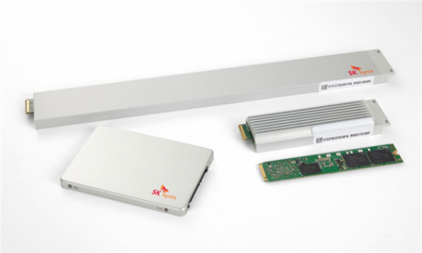

SK Hynix mass production 8TB enterprise SSD hard drive: can store 2000 HD movies

SK Hynix has announced the start of mass production of a new generation of enterprise-class SSD hard disk PE8110 E1.S with a maximum capacity of 8TB. The certification was completed at the end of March and shipped to customers in May.
In June 2019, SK Hynix launched a 128-layer stack of 4D flash memory worldwide, and based on this flash memory launched a new generation of enterprise hard disk, there are a variety of specifications, 2.5 inch SATA is SE5110, PCIe has three kinds - M.2, E1.L, E1.S.
The PE8110 E1.S series is 88% faster to read and 83% faster to write compared to the previous generation PE6110 series hard disks that use 96-layer flash memory.
In terms of performance, the PE8110 E1.S hard disk can write 4GB HD movies in 1 second, the maximum capacity is 8TB, and it can store 2000 movies.
In other aspects, PE8110 E1.S hard disk performance has improved, but the power consumption is the same as the previous generation, the energy efficiency is better, the heat is also reduced, the warranty period has been extended from 3 years to 5 years.